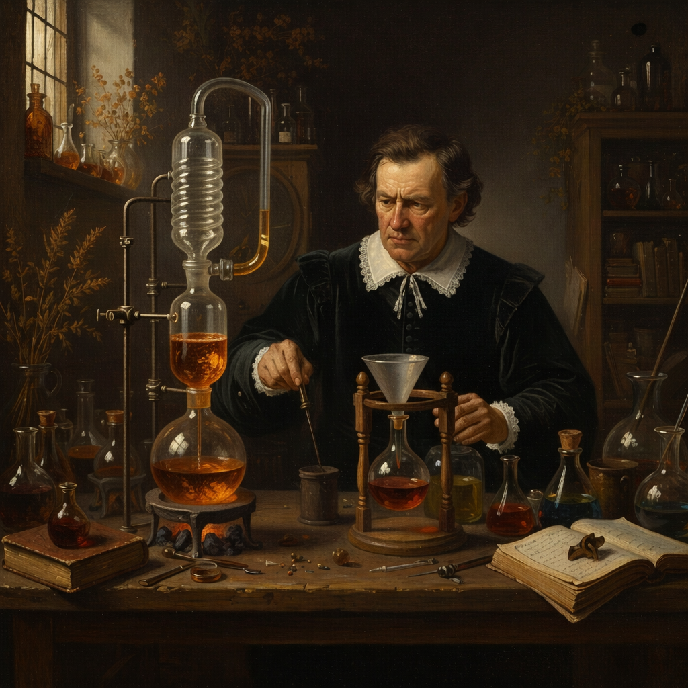

|
Xinyuan Wei
Hi there! I'm a sophomore at Peking University, Yuanpei College, and I'm spending fall 2026 at UC Berkeley.
A former Chinese Chemistry Olympiad medalist, I now work on generative models, carrying that same molecular intuition into neural architectures that synthesize and compose.
Github
|

|
News
- [2026.9] Awarded National Scholarship for Undergraduate Students!
- [2026.9] One paper (FlashMol) is accepted to NeurIPS 2026!
|
Selected Publications
I'm interested in generative models and science. Some papers are highlighted.
|
FlashMol: High-Quality Molecule Generation in as Few as Four Steps
Xinyuan Wei*,
Zian Li*,
Shaoheng Yan,
Cai Zhou,
Muhan Zhang†
* Equal contribution † Corresponding author
NeurIPS, 2026
arXiv
|
DUET: A Diversity–Quality Duet of Distillation Experts for Two-Step Video Generation
Zian Li,
Litong Gong,
Borui Liao,
Pengfei Liu,
Xinyu Wang,
Xinyuan Wei,
Yifan Gao,
Tiezheng Ge,
Muhan Zhang†
† Corresponding author
arXiv, 2026
arXiv
|
Education
University of California, Berkeley
Visiting Student
Fall 2026
|
Peking University
Undergraduate Student, Yuanpei College
2025.09 - Present
|
Honors & Awards
|
2026
|
National Scholarship for Undergraduate Students
|
|
High School
|
Gold Medal, Chinese Chemistry Olympiad Final Contest
|
Coursework
|
High School
|
Modern Graph Theory (audit), Higher Algebra (audit), Combinatorics (audit)
|
|
Year 1, Fall
|
Machine Learning, Intensive Readings for English Majors (1), CS231n (self-taught), Introduction to Embodied AI (self-taught), Missing Semester (self-taught)
|
|
Year 1, Spring
|
Principles and Methods of AIGC, Directed Research in AI Systems, Fundamentals of AI
|
This homepage is designed based on Jon Barron's website and deployed on Github Pages.
|
|